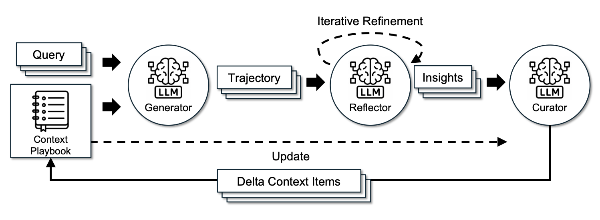

PART 5 · Harness 與自我改進
上下文工程：從手寫 Prompt 到自動進化
隨着 Agent 任務變長，上下文管理不再是可選項。它正在成為 Harness 優化的核心戰場。
優化對象的演進
模型越智能、越強大，我們能優化的目標就越複雜、方法越通用。這條演進綫從調 prompt 一路到優化寫優化器的程式碼。
問題：上下文膨脹
簡單追加 = 失控
把所有工具響應和模型生成簡單追加到上下文中，隨着 Agent 任務時長增加會迅速失控。
長上下文研究會持續進步，但目前長上下文智能和上下文工程往往交織在一起：上下文管理是在 LLM 有限注意力下構建更結構化、簡潔上下文的關鍵層。
長上下文研究會持續進步，但目前長上下文智能和上下文工程往往交織在一起：上下文管理是在 LLM 有限注意力下構建更結構化、簡潔上下文的關鍵層。
ACE：Agentic Context Engineering
講人話：上下文就係 AI 嘅工作記憶：佢眼前睇到嘅所有資料。ACE 嘅思路係：唔好畀記憶變成一鑊粥，要備住一本條理清晰嘅工作手冊。做嘢嘅人（Generator）跟手冊做，覆盤嘅人（Reflector）總結經驗教訓，管手冊嘅人（Curator）將教訓一條條執入去手冊。手冊越用越精，唔會越用越厚。
上下文是不斷演進的劇本，不能任由 Prompt 不斷增長
ACE（Zhang et al. 2025）維護一份結構化的 bullet point 劇本，每條包含 identifier 和 description。三個組件協作維護這份劇本：
組件 1
Generator 生成器
執行任務、生成軌跡，參考劇本中的 bullet points 作為指引。
組件 2
Reflector 反思器
從成功和失敗的軌跡中提煉洞察，萃取經驗教訓。
組件 3
Curator 策展器
用增量的、條目化的 entries 更新結構化上下文，定期精煉去重。

ACE 框架：Generator 生成軌跡 → Reflector 提煉洞察 → Curator 增量更新上下文劇本。（來源：Zhang et al. 2025）
關鍵設計：Curator 輸出結構化的 (identifier, description) 條目，用確定性邏輯合併進劇本，從不重寫整塊 prompt blob。這避免了迭代重寫時的上下文坍縮和簡潔偏差。
MCE：Meta Context Engineering
講人話：ACE 係把手冊執好，MCE 再追深一層：執手冊嘅方法本身係咪都可以優化？例如按時間排定按主題排？記大綱定記細節？MCE 將記咩（內容）同點樣記（方法）分開，兩邊一齊進化：唔單止筆記越來越好，記筆記嘅方法都越來越醒目。
分離機制與內容，雙層優化
MCE（Ye et al. 2026）在 ACE 基礎上更進一步：將如何管理上下文（機制/Skill）與上下文中有什麼（內容）分離，在兩個層面同時優化。
一個 MCE Skill 定義了上下文函式
• ρ = 靜態組件（prompts、知識庫、程式碼庫）
• F = 動態算子（搜索、選擇、過濾、格式化）
一個 MCE Skill 定義了上下文函式
c = F(x; ρ)：• ρ = 靜態組件（prompts、知識庫、程式碼庫）
• F = 動態算子（搜索、選擇、過濾、格式化）
呢條公式講緊咩：其實得兩句。內層：用而家嗰套記筆記方法，將筆記寫到最好；外層：比較唔同記筆記方法，揀最好嗰套。先優化內容，再優化方法，輪流嚟。
雙層優化：
內層: c* = argmax J_train(c; s) ← 給定 skill s，找最優上下文
外層: s* = argmax J_val(c*) ← 找最優 skill（在驗證集上）
Skill 數據庫： H = {(s_i, c_i, J_train_i, J_val_i)} 跟蹤歷史
技能進化： s_new = crossover(task, H) ← Meta-agent 執行 agentic crossover
上下文優化： c_new = engineer(task, s_new; c_prev, Rollouts)

MCE 框架：meta-level 技能進化搜索上下文管理機制，base-level 優化任務上下文。（來源：Ye et al. 2026）
實現：上下文函式 = 文件系統中的目錄
MCE 中一個 context function 被實例化為專用目錄中的文件集合：
• 靜態文件：
• 動態文件：上下文數據和 rollout 記錄
meta-level 和 base-level 優化都在標準編碼環境中執行，使用工具集：
• 靜態文件：
skill.md（存儲任務最重要的知識）• 動態文件：上下文數據和 rollout 記錄
meta-level 和 base-level 優化都在標準編碼環境中執行，使用工具集：
Read, Write, Edit, Bash, Glob, Grep, TodoWrite
Meta-Harness：優化 Harness 的 Harness
講人話：呢層係套娃最外嗰圈。ACE 優化筆記內容，MCE 優化記筆記嘅方法，Meta-Harness 直接優化成個工作台嘅源程式碼。等於請 AI 重新裝修成個工場，遠遠唔止換工具、換方法。威力最大，但亦最食算力（每改一版都要完整試跑打分）。
優化對象：決定信息存儲、檢索和呈現的程式碼
Meta-Harness（Lee et al. 2026）更深一層：被優化的不再是上下文內容。被優化的是決定什麼信息應該被存儲、檢索和呈現給模型的程式碼本身。它是優化 Harness 的 Harness。
• Proposer 本身是一個編碼 Agent
• 輸出是 Pareto 前沿上的 Harness 候選集合
• 執行歷史通過文件系統存取：coding agent 用
• 每個提出的 harness 是文件系統中的字典：包含源碼、分數、軌跡和狀態更新
• Proposer 本身是一個編碼 Agent
• 輸出是 Pareto 前沿上的 Harness 候選集合
• 執行歷史通過文件系統存取：coding agent 用
grep/cat 按需讀取，避免全塞進 prompt• 每個提出的 harness 是文件系統中的字典：包含源碼、分數、軌跡和狀態更新

Meta-Harness 外循環優化算法：迭代創建新 harness，只保留合格者。（來源：Lee et al. 2026）

Meta-Harness 在文本分類和 TerminalBench-2 上的表現。注意 TerminalBench-2 實驗從已有強 harness 初始化。（來源：Lee et al. 2026）
三種方法對比
ACE
從軌跡中學習
用規則化的 Generator→Reflector→Curator 管綫維護結構化 bullet points。更新規則仍手工設計。
MCE
進化管理機制
不固定上下文格式，用 free-form skills 存儲知識，雙層迭代進化 skill 和 context。機制本身可變。
Meta-Harness
優化整個系統程式碼
Proposer 是編碼 Agent，優化對象是 harness 源碼本身，輸出 Pareto 前沿候選集。最通用但計算最重。
直觀對比：看三種策略逐輪變化
就緒
樸素追加
每輪把所有歷史全部塞進上下文…
ACE 結構化
Curator 只增量寫入結構化條目…
MCE 元進化
Skill 與內容雙層同時進化…
點擊上方 運行 10 輪對比，觀察三種策略隨輪次推進的即時變化：誰在膨脹、誰保持穩定、誰越跑越強。
核心教訓：一旦 harness 設計變成可執行的搜索空間，強編碼 Agent 就能利用人類工程師使用的同一設計空間。上下文工程的未來是讓系統自動學會什麼時候存什麼、怎麼檢索、怎麼呈現，再聰明的手寫 prompt 也只是過渡。